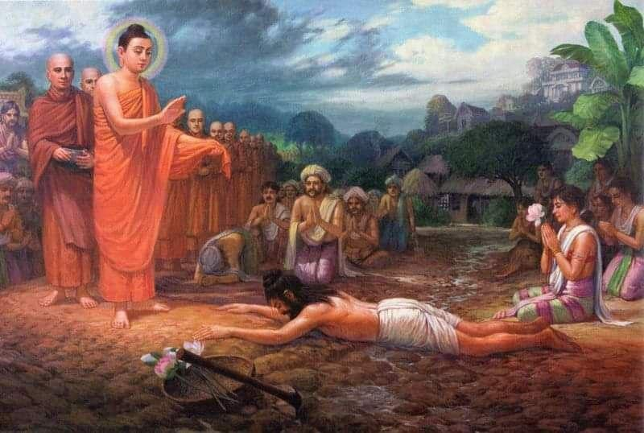

Namo tassa bhagavato arahato sammāsambuddhassa
Homage to the Most Venerable One, the Arhat, the Self-Awakened One
Namo tassa bhagavato arahato sammāsambuddhassa
Homage to the Most Venerable One, the Arhat, the Self-Awakened One
Namo tassa bhagavato arahato sammāsambuddhassa
Homage to the Most Venerable One, the Arhat, the Self-Awakened One
Sabbapāpassa akaraṇaṃ,
Do no evil
Kusalassa upasampadā ;
Accumulate good things
Sacitta pariyo dapanaṃ,
Encourage your mind to comprehend
Etaṃ buddhāna sāsanaṃ
This is Buddha's teaching
The first picture is a kind of prequel, the action takes place long before Siddhartha was born, when a man named Sumedha intended to become a Bodhisattva, i.e. one who, over an unimaginably long period of time, perfects in himself the qualities that allow him to become a Buddha in his last birth, who independently awakens into the four truths and teaches them to people and devas in an unsurpassed manner.
The picture depicts Buddha Dipankara accompanied by four hundred thousand Arhats, heading to the city of Ramma at the invitation of the townspeople to accept gifts, and the brahmin Sumedha taking the bodhisattva vows, prostrating himself before the Buddha.
Buddha Dipankara (lit. He who makes butter lamps, or He who gives light to the lamp) is a Tathagata who lived four immeasurable kalpas and one hundred thousand kalpas ago. The first Buddha of the twenty-four Tathagatas of the past, about whom Buddha Shakyamuni told his disciples. During the time of Buddha Dipankara, the future Buddha Shakyamuni reincarnated as the brahmin Sumedha. One day he thought about the vicissitudes of reincarnation, about suffering, about old age and illness.
One day he went up to the upper terrace of his mansion and, sitting alone, these thoughts arose in him:
"Wretched is birth into a new existence; so is the destruction of the body; wretched also is to die in delusion, oppressed and crushed by old age. Subject to birth, old age and disease, I will seek Nibbāna, where old age, death and fear disappear.
It would be wonderful if I could leave this body of mine without paying any attention to it, since it is full of putrefactive substances such as urine, excrement, pus, blood, bile, mucus, saliva, etc.
Surely there must be a path leading to the end of all this, a path to Nibbāna. It cannot be otherwise. I will seek that path to be freed from the bondage of existence.
For example, just as when there is suffering (dukkha), in this world there is also happiness (sukha); so in this case, when there is the round of existences, which is the arising of suffering, there must also be Nibbāna, which is the cessation of suffering.”
Just as when there is heat, there is also cold; even in this case, when there are the three fires of rāga, dosa and moha, there must also be Nibbāna, that is, the extinction of these three fires.
After these thoughts came into his mind, he continued to think deeply:
"For example, a person who has fallen into a pit of filth or is dirty with mud sees from afar a clear pond decorated with five kinds of lotuses. If, in spite of seeing it, he does not find the right way to the pond, it is not the fault of the pond but of the person himself. In the same way, there is a large pond of the immortal Nibbāna where one can wash away one's mental impurities, and if one does not seek that large pond of Nibbāna, it is not the fault of Nibbāna.
Again, if a person is surrounded by enemies and does not try to escape, although there is a path of escape for him, it is not the fault of the path. Similarly, if a person besieged by enemies in the form of mental defilements does not wish to escape, although there clearly is a high road to the golden city of Nibbāna, where one is protected from enemies in the form of mental defilements, it is not the fault of that high road.
Again, if a person falls ill with a disease and does not want to be treated, although there is a good doctor, the doctor is not to blame. In the same way, if someone suffers painfully from diseases of mental impurities and does not seek a master to cure them, although there is someone who is experienced in removing these mental impurities, then the master is not to blame."
Reflecting on renunciation in light of these comparisons, the thought again occurred to the sage Sumedha : “Having accumulated such great wealth, my father, grandfather, and my other relatives for seven generations were unable to use even a single coin when they passed away. But I must find a way to take this wealth with me on the journey to Nibbāna.”
It is worth commenting on the last sentence here:
He, of course, could not take his wealth with him. But here Sumedha is referring to the beneficial results that can accrue from his good deeds of generous giving.
Then he approached the king and said, "Your Majesty, since my mind is obsessed with great fear of the dangers and sufferings arising from such things as birth, old age, etc., I am going to leave home life and become a hermit. I have wealth worth many millions. Please take it."
"I do not need your wealth, young man. But you can dispose of it as you wish," replied the king.
"Very well, your Majesty," said the wise Sumedha, and with the beat of a mighty drum he proclaimed this throughout the city of Amaravati: "Let those who want my wealth come and take it." And he distributed his wealth, giving great alms to all, without distinction of status and whether they were beggars or not.
Having thus performed a great act of generosity, the wise Sumedha renounced the world. As is written in the Mahāvaṃse , on the instructions of Sakka (the lord of the devas) himself, a suitable dwelling place for his practice was prepared for him.
This dwelling could promote tranquility of mind, which could lead to insight (vipassanā) into the true nature of things, their impermanence, suffering and impersonality.
Having become an ascetic, Sumedho, walking back and forth along a path 60 cubits long, looked at himself in his new hermit's robe and rejoiced at the thought:
“My heart’s desire has been completely fulfilled. Indeed, my ascetic life is wonderful. The ascetic life has been praised by all the sages, such as the Buddhas and Paccekabuddha. The fetters of family life have been abandoned. I have safely left the realm of worldly pleasures. I have entered the noble life of an ascetic. I will cultivate and practice the holy life. And I will try to benefit from these practices.”
In the evening, Sumedho entered the hut and, lying on a wooden board next to a reed couch, used his clothes as a blanket and fell asleep. Waking up early in the morning, he again reflected on the reasons and circumstances of his renunciation:
"Seeing the disadvantages of family life and renouncing incomparable wealth and unlimited means and retinue, I entered the forest and became an ascetic, desiring to seek merit that would free me from the net of sensuality. From today onwards I must not be negligent."
And apparently, at that moment, he thought about three categories of wrong thoughts.
There are three categories of wrong thoughts, namely:
● thoughts based on passionate desire (kāma-vitakka), directed towards sensual pleasures;
● thoughts based on ill will (vyāpāda-vitakka), which are aimed at killing and destroying;
● thoughts based on cruelty (vihiṃsā-vitakka), aimed at causing harm and violence to other living beings.
These thoughts can be compared to wild flies that feed on those who are careless and abandon the practice of mental detachment from defilements and physical detachment from sensual pleasures.
As you may have already guessed and remembered, these three types of unwholesome thinking are the opposite of the three types of wholesome thinking (sammā saṅkappa), which is the second point of the Noble Eightfold Path. Let me remind you of them all:
1. Sammā-diṭṭhi — right view
2. Sammā saṅkappa — right thinking (or, as it is often translated, right aspiration)
3. Sammā-vācā — right speech
4. Sammā-kammanta — right action
5. Sammā-ājīva – right livelihood
6. Sammā-vāyāma — right effort
7. Sammā-sati – right mindfulness
8. Sammā-samādhi – right concentration
We won’t dwell on them in detail for now, but will continue the story.
Thinking like this, Sumedho said to himself, “Now is the time for me to devote myself entirely to the practice of non-attachment ( paviveka ).
True, seeing the shortcomings of family life that hinder, hinder and harm serious practices, I have renounced the world. This leaf hut is truly delightful. This beautifully leveled land is bright yellow, like a ripe bael fruit. The walls are silvery white. The leaves on the roof are a beautiful red, like a pigeon's foot. The sofa is made of reeds, decorated with patterns of a colorful blanket. The dwelling is very comfortable to live in. I do not think that the luxury of my former worldly home can surpass the comfort provided by this hut."
Thinking in this way, he recognized the eight disadvantages of the leaf hut and the ten advantages of the foot of the tree. So that same day, he left the hut and went to the foot of the trees. The next morning, he entered a nearby village to beg. The villagers went to great lengths to offer him delicious food. Having finished his meal, he returned to the forest and sat down, thinking:
"I have not become an ascetic because I lack food. Tasty food, delicacies, as a rule, increase pride and arrogance. There is no end to the troubles that arise from the need to sustain life on such food. It would be good if I abstained from food prepared from cultivated grains and ate only the fruits that fall from the trees."
From that moment on he lived only on fruits that fell from the trees. Without lying down at all, he made strenuous efforts to meditate continuously in only three postures: sitting, standing and walking, and at the end of seven days he had attained the eight attainments ( samāpatti or jhanic attainments) and the five super-knowledges ( abhiññā - supernatural powers).
During this period, the fame of the Conqueror in Truth, Buddha Dipankara, began to spread throughout the world.
Buddha Dipankara stayed in the city of Rammavati in the Sudassana monastery.
But Sumedha was not aware of these wonderful events, for he was then completely absorbed in the bliss of absorption ( jhāna ).
Meanwhile, the people of Rammavatī made elaborate preparations for the great almsgiving ( asadisa-mahā-dāna ). They decorated and tidied up the city streets. When all the necessary preparations had been made in the city, the citizens set about repairing the road by which the Buddha would enter the city. They filled up the holes and cracks caused by the floods with earth and leveled the uneven muddy ground. The road was also strewn with pearl-white sand and strewn with flowers and rice flakes.
At this time, the hermit Sumedha rose into the air from his hermitage and, while traveling through the air, saw the people of Rammavati happily engaged in repairing the roads. Wondering what was happening below, he hovered at a suitable place and, while the people watched him hanging in the air in utter amazement, he asked:
"You repair the road with such pleasure and enthusiasm. Who are you repairing it for?"
Then the people, having come to their senses a little, answered:
"Venerable Sumedha, the peerless Buddha Dipankara, who has conquered the five kinds of death ( māra ), has appeared in this world. He is the supreme lord of the entire world. We are repairing the road for his visit."
From this conversation it can be noted that Buddha Dipankara appeared long after Sumedha had attained jhanas and super-knowledge. Sumedha was unaware of Dipankara's conception, birth, becoming a Buddha and his first sermon, because he was wandering only in the forests and the sky, completely absorbed in the bliss of absorption, uninterested in any events of the human world. It was only when he was traveling through the air and saw the people of Rammavati repairing and cleaning the roads that he came down to earth to ask what was happening. This suggests that Sumedha was several thousand years old at that time, since the life span when Buddha Dipankara appeared was 100,000 years.
Sumedha was filled with joy when he heard the word "Buddha" spoken by the people of Rammavati. He felt such great happiness in his soul that he repeated the word "Buddha" endlessly, as he could not contain the intense joy that arose within him.
Standing on the spot where he had descended, Sumedha was filled with happiness and also moved by saṃvega , a special sense of urgency and urgency. He thought: “I will sow excellent seeds of merit in the fertile soil for the growth of good deeds through the Buddha Dīpaṅkara. Indeed, it is rare and difficult to witness the appearance of the Buddha. This happy moment has arrived, and I will not allow such rare good fortune to pass me by.”
Thinking this, he turned to the people: “People, if you are preparing the road for the Buddha’s visit, allocate a section of the road for me too. I would like to take part in this work too.” “Okay,” the people said, and since they had just witnessed him flying in the sky and thought that he was most likely a person with great supernatural powers, they allocated him a large, swampy and very uneven piece of land that would be difficult to correct.
Then Sumedha, with joy in his heart, thought of the 9 qualities of the Buddha:
A Buddha is one who is worthy of the epithet "Arahā" because he has completely abandoned all obscurations along with their inherent tendencies. In all his bodily actions, speech and mental activities, there is always mindfulness manifested along with wisdom. His moral conduct is impeccable, he has completely abandoned greed, aversion, embarrassment and confusion, conceit, vanity and wrong views.
He is Sammāsambuddha , the perfect, self-enlightened one, one who is endowed with knowledge of all dhammas ( sabbaññutañāṇa ).
He is one who is endowed with protective powers ( vijjācaraṇa sampanna ) – knowledge, vision and superpowers, and impeccable conduct.
The Buddha's compassion for all beings is boundless. With the eye of wisdom, he always seeks out those who need to be liberated from the cycle of repeated births ( saṃsāra ) and those who have the potential to do so. Being the most diligent and hardworking of all in this world, he is known as Sugato - the Well-Walker. He always comes bringing only goodness and liberation from suffering.
He knows everything about the world of men, devas, brahmas and what moves beings and determines their thoughts and aspirations. His insight is unsurpassed, he knows everything about their degree of maturity and immaturity, natural and intellectual abilities, habits, predispositions and desires. He is unsurpassed in knowledge of the world of beings, spatial worlds and the minds of beings. Therefore his quality of Lokavidū (knower of the worlds) is known to all.
He is endowed with the quality of Anuttaro purisadammasārathi because he is unsurpassed in pacifying and taming those in need.
He is Satthādevamanussānaṃ , the unsurpassed Teacher of men and devas.
Guided by the Four Noble Truths and personal practice of Dhamma, many people have realized the Path ( Magga ) and the Fruit ( Phala ). The Buddha reveals the Dhamma to people, giving instructions regarding any difficulties and sufferings. Therefore, people say with a sense of reverence and respect, “He is truly a noble person, the one who has helped people to know the Dhamma, which they did not know before, he is truly the Buddha!”
After leaving the life of a prince, the Bodhisattva performed ascetic practices for six years, and then through the Middle Way he finally attained enlightenment. The Buddha is endowed with the thirty-two marks of a noble person and the eighty minor marks. His appearance is very attractive and unusual, and anyone who sees him feels confidence and inspiration, paying homage to him. All wise people, whether they are rulers, brahmins or monks, pay homage to the Buddha. For these reasons, he is known as Bhagavā (Bhagava - the most revered).
Thinking thus, Sumedha decided, "I can repair the road with my supernatural powers so that it looks nice. But if I do this, the people around me may not appreciate it highly because it will be done easily and very quickly. Today I must perform my duties with my own physical labor." Having made this decision, he filled the swamp with earth that he had brought from afar.
Before Sumedha could complete the work assigned to him, Buddha Dipankara appeared on the road with 400,000 Arhats, each of whom was endowed with the six super-knowledges ( abhiññā ).
When Buddha Dipankara and the Arhats passed along the road, the devas and humans welcomed them with drumming and singing.
At that time, humans were visible to the devas, and the devas were visible to humans. All these beings, divine and human, followed the Buddha, some raising their hands in worship, and others playing their musical instruments.
Sumedha gazed without blinking at the Buddha's appearance, which was endowed with the 32 marks of a Great Man and further adorned with 80 minor marks. He witnessed the splendor of the Buddha, with a bright aura always surrounding him and six radiances emanating from his body, flashing like lightning in the sapphire-blue sky.
Then he decided thus: “Today I should give up my life in the presence of the Buddha. Let him not trample in the mud because I did not have time to finish repairing the road, and let him not suffer from discomfort. Let the Buddha and all his 400,000 Arhats step on my back and pass by just as they would walk on the planks of a bridge. Using my body as a path for the Buddha and his Arhats will definitely bring me long-term well-being and happiness.”
Having made this decision, he untied his knot of hair, spread a mat of skins and a fibrous robe on the muddy swamp, and then stretched out on them like a bridge built of ruby-colored wooden planks.
Thus, Sumedha, prostrated, had the desire to become a Buddha. And his mind was focused on this.
While Sumedha was lying with the intent to become Buddha, a young girl, a Brahmin named Sumitta, joined the people who had gathered in the presence of the Buddha. In honor of the Buddha, she brought eight lotus flowers. When she found herself in the midst of the crowd, and as soon as her gaze fell on Sumedha, she was suddenly overcome with great affection for him. Although she wanted to offer him several gifts, she had nothing but the eight lotus flowers. Then she said to him:
"Venerable hermit, I give you five lotus flowers to offer to the Buddha yourself. The remaining three flowers are for my own offering." She then handed Sumedha the five lotus flowers and expressed her wish, saying, "Venerable hermit, during the entire period that you attain perfection to become a Buddha, may I be your companion who shares your life."
Sumedha accepted lotus flowers from the young Sumitta and, in the midst of the crowd, offered them to Buddha Dipankara, who approached him and resolved to attain Perfect Self-Awakening.
Observing the scene that took place between Sumedha and Sumitta, the Buddha made a prediction among the crowd, as described in the Yasodhara-therī-apadāna :
“Sumedha, this girl Sumitta will be your companion. She will share her life with you, helping you with equal zeal in your becoming a Buddha. She will delight you with her every thought, word and deed. She will be beautiful to look at, sweet in words that can comfort the heart. When you become a Buddha, in your last existence she will become a disciple who will receive your spiritual heritage of Awakening and will have supernatural psychic powers.”
Among the assembled people, upon seeing the splendor of the Buddha, each and every one of them had the desire to become a Buddha. But although they were striving for Buddhahood, not one of them was worthy of becoming a Buddha. But unlike this multitude of people, Sumedha was fully endowed with everything necessary to become a Buddha. In fact, he was inclined to become a Buddha because he was endowed with the eight factors necessary for receiving prophecy. These eight factors were:
1. To be human.
2. Be a man.
3. Complete all the preliminary practices and conditions necessary for the further realization of Awakening.
4. Meeting with the living Buddha.
5. To be an ascetic who believes in the law ( kamma ).
6. Be able to attain jhana and possess the five super-knowledges ( abhiññā ).
7. To be prepared to give up one's life for the welfare of the Buddha. If the Buddha Dīpankara and his 400,000 arhats had walked on the back of the prostrate Sumedha, as if they were crossing a bridge, he would not have survived. Knowing this perfectly, Sumedha prepared himself without hesitation and courageously to render service to the Buddha. Such an action is called the principal act of merit ( adhikāra-kusala ).
8. Intense beneficial aspiration to become a Buddha. Even if the entire universe were filled with red-hot coals and sharp spears, he would not hesitate to pass through them to become a Buddha.
Knowing that Sumedha was endowed with these necessary qualities, Buddha Dipankara went to Sumedha and, standing at the head of his prostrate body, used his supernatural psychic power of seeing the future to find out whether Sumedha's aspiration to become a Buddha would be fulfilled. The Buddha uttered a prophecy in nine verses, beginning with these words:
Passatha imaṁ tapasāṁ jaṭilaṁ uggatapannaṁ (Bv 2.61-69):
“Monks, this ascetic with matted hair, of severe ascetic practices! The recluse Sumedha will become Enlightened among the Brahmas, Devas, and humans after countless eons, or rather after four immeasurable periods and 100,000 eons from now. On the threshold of his becoming a Buddha, this Sumedha will renounce the world, leaving behind the delightful city of Kapilavatthu; he will then devote himself to meditation and the performance of severe ascetic practices (dukkaracariya). Staying under the banyan tree Ajapala, he will accept an offering of milk-rice and go to the Neranjara River. He will eat milk-rice on the bank of the river and then approach the Bodhi tree along a path well prepared by the Devas. Having reached the Bodhi tree, which will be the place of attaining Enlightenment, he will circumambulate it clockwise; He will turn from the south to the west, from the west to the north, and then from the north to the east and sit down with the intention of becoming the Supreme Awakened One, and no one will be able to surpass him. Then, seated at the foot of the Bodhi tree, he will gain insight into the four noble truths. The mother of this Buddha will be named Maya Devi; the father will be called Suddhodana. The Buddha will be named Gotama. His two chief disciples will be Kolita and Upatissa, who will be free from (āsava) and lust, and who have a calm mind and deep mental concentration. A monk named Ananda will serve this Buddha as an attendant. Khema and Uppalavanna, free from mental defilements and attachments, possessing a calm mind and deep mental concentration, will be the two chief disciples. The tree (assatha) will be the Buddha's Bodhi tree, under which he will attain Enlightenment. Citta and Hattalavaka will be the foremost laymen serving the Buddha. Similarly, Uttara and Nandamata will be the foremost laywomen."
Upon hearing the prophecy of Buddha Dipankara, the devas and humans exclaimed with joy, “It is said that this ascetic Sumedha has truly entered the path of a Bodhisattva.” The devas and Brahmas who had come from the 10,000 world system along with the humans folded their hands in worship. They also expressed their wishes (Bv. 2.73-75):
“Although we have not yet been able to put into practice the teaching of Buddha Dipankara, we have met this noble ascetic who will become a Buddha. May he. When this happens, we will strive to attain the highest knowledge of the Dhamma. For example, there are those who try to cross a river but are unable to reach their appointed place on the other bank because they are carried away by the current of the river. However, they manage to catch hold of a place somewhere further down the river and from there cross to their destination. In the same way, although we are not yet able to make use of the teaching of Buddha Dipankara, we have met this noble ascetic who is destined to become a Buddha in the future, and then we will attain the paths and fruits.”
Afterwards, Buddha Dipankara, having thus made the prophecy and having been honoured with eight handfuls of flowers, departed, stepping with his right foot next to Sumedha. From the place where Buddha had made the prophecy, 400,000 Arhats also departed, leaving Sumedha on their right side, having honoured him with flowers and incense. Also the people, nagas and gandhabbas departed from there, having paid their respects to Sumedha and having honoured him with flowers and incense.
When the Buddha Dipankara, the guide of the three worlds, and the 400,000 arhats had disappeared from his sight, Sumedho was filled with joy and happiness, jubilation and delightful satisfaction, and he sat cross-legged on a huge heap of flowers strewn in his honor by devas and humans, and reflected thus (Bv. 2.80-81):
"I have fully perfected the absorptions (jhāna) and have attained the five super-knowledges (abhiññā). In the entire 10,000-world system, there is not a single ascetic who is superior to me, except the Buddha and his disciples. I do not see anyone who can match me in the use of super-faculties, except them."
Then the Devas and Brahmas who had come from all over the 10,000 world system, having announced the omens that Sumedha would become a Sammasambuddha, spoke words of praise and encouragement thus: “Noble Sumedha, strive forward with constant diligence! There must be no retreat. Continue your efforts! We know beyond any doubt that you will certainly become a Buddha.”
Images of Dipankara standing are common in China, Thailand and Nepal.
One of the Buddha statues in Bamiyan, Afghanistan, destroyed by the Taliban in 2001, is believed to have depicted the standing Buddha Dipankara.
Sometimes Buddha Shakyamuni and Buddha Maitreya are depicted next to him. In this case, Dipankara (Buddha of the past), Shakyamuni (Buddha of the present) and Maitreya (Buddha of the future) together symbolize the Buddhas of the three times.